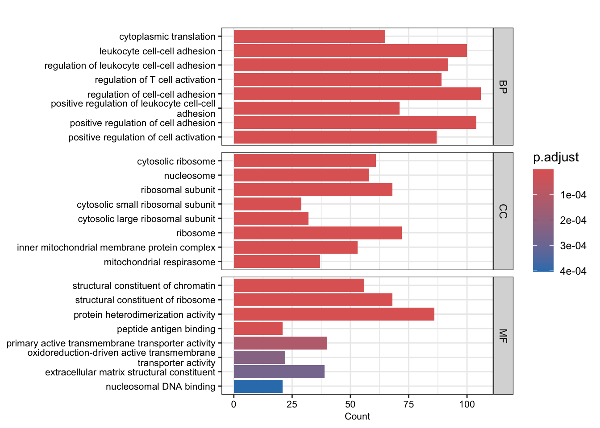
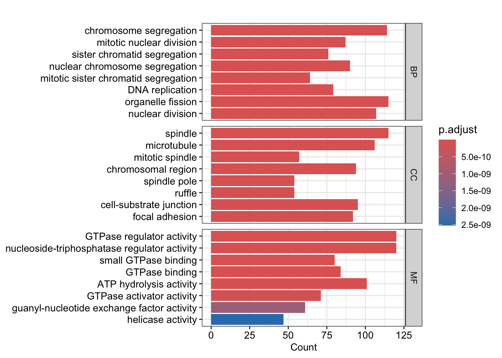
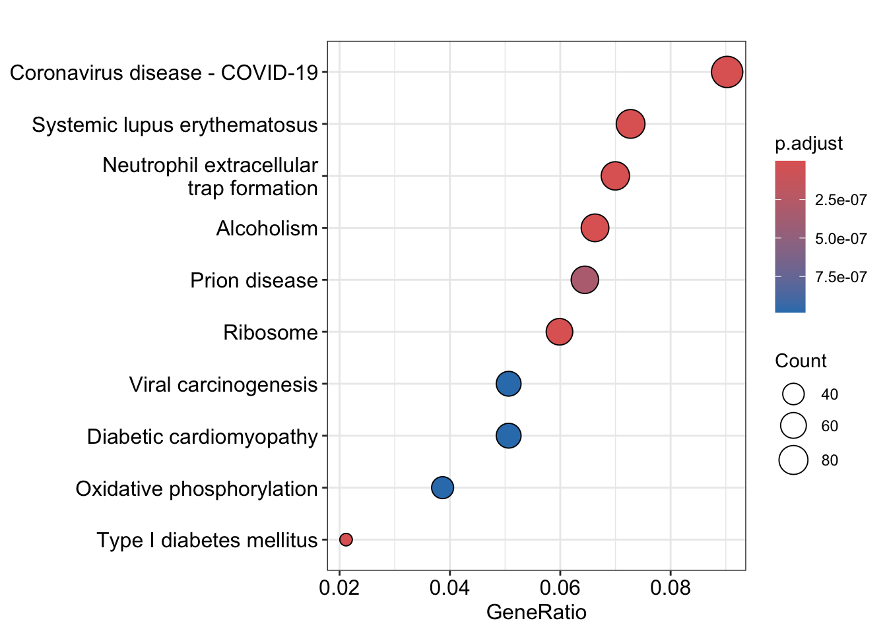
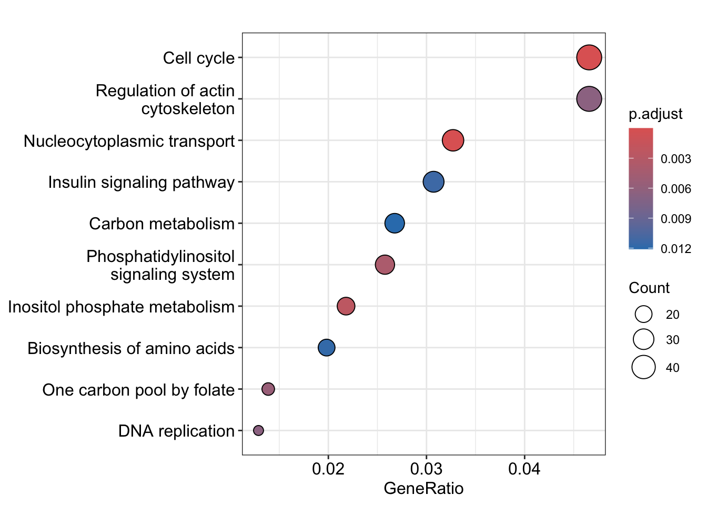
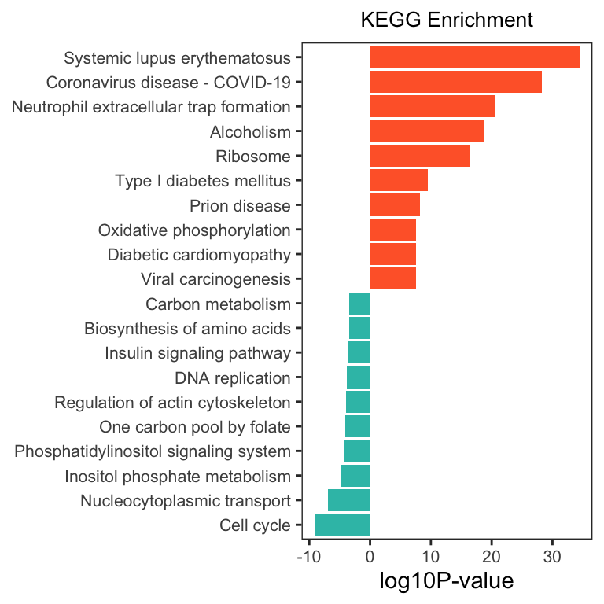

第 7 章 ORA 富集分析
7.1 加载数据
# 加载包
library(org.Hs.eg.db)
library(clusterProfiler)
library(ggplot2)
library(stringr)
library(tidyverse)
load(file = "Rdata/DEG_edgeR_reg.Rdata")
colnames(total)
## [1] "SYMBOL" "baseMean" "baseMeanA" "baseMeanB"
## [5] "foldChange" "log2FoldChange" "PValue" "PAdj"
## [9] "FDR" "falsePos" "s_MiaFRFP_1" "s_MiaFRFP_2"
## [13] "s_MiaFRFP_3" "s_Part1Lag_1" "s_Part1Lag_2" "s_Part1Lag_3"
## [17] "regulation"
gene_up <- total %>%
filter(regulation == "up")
gene_up <- gene_up$SYMBOL
gene_down <- total %>%
filter(regulation == "down")
gene_down <- gene_down$SYMBOL
length(gene_up);length(gene_down)
## [1] 3880
## [1] 2207
gene_up=as.character(na.omit(AnnotationDbi::select(org.Hs.eg.db,keys = gene_up,columns = 'ENTREZID',keytype = 'SYMBOL')[,2]))
gene_down=as.character(na.omit(AnnotationDbi::select(org.Hs.eg.db,keys = gene_down,columns = 'ENTREZID',keytype = 'SYMBOL')[,2]))
# 输出文件夹
OUT_FOLDER <- "Anno_enrichment/ORA"
dir.create(OUT_FOLDER, showWarnings = FALSE)7.2 GO 富集分析
## up
go_up <- enrichGO(gene_up, OrgDb = "org.Hs.eg.db", ont="all",
pvalueCutoff = 0.999,
qvalueCutoff = 0.999)
go_up=DOSE::setReadable(go_up, OrgDb='org.Hs.eg.db', keyType='ENTREZID')
## down
go_down <- enrichGO(gene_down, OrgDb = "org.Hs.eg.db", ont="all",
pvalueCutoff = 0.999,
qvalueCutoff = 0.999)
go_down=DOSE::setReadable(go_down, OrgDb='org.Hs.eg.db', keyType='ENTREZID')## up
barplot(go_up, split="ONTOLOGY", font.size = 8)+
facet_grid(ONTOLOGY~., scale="free") +
scale_y_discrete(labels=function(x) str_wrap(x, width=50))
## down
barplot(go_down, split="ONTOLOGY", font.size =10)+
facet_grid(ONTOLOGY~., scale="free") +
scale_y_discrete(labels=function(x) str_wrap(x, width=50)) 

7.3 KEGG 富集分析
kk_up <- enrichKEGG(gene = gene_up,
organism = 'hsa',
pvalueCutoff = 0.9,
qvalueCutoff =0.9)
kk_up=DOSE::setReadable(kk_up, OrgDb='org.Hs.eg.db', keyType='ENTREZID')#按需替换
kk_down <- enrichKEGG(gene = gene_down,
organism = 'hsa',
pvalueCutoff = 0.9,
qvalueCutoff =0.9)
kk_down=DOSE::setReadable(kk_down, OrgDb='org.Hs.eg.db', keyType='ENTREZID')#按需替换

将上调和下调的 KEGG 数据合并画图
up_kegg <- kk_up[kk_up@result$pvalue < 0.01,];up_kegg$group=1
down_kegg <- kk_down[kk_down$pvalue < 0.01,];down_kegg$group=-1
dat <- rbind(head(up_kegg, 10), head(down_kegg, 10))
# 计算负对数 p 值
dat$`-log10PValue` <- -log10(dat$pvalue)* dat$group
# 按照 p 值排序
dat <- dat[order(dat$`-log10PValue`, decreasing = FALSE),]
# 移除描述中的特定字符串
dat$Description <- gsub(' - Mus musculus \\(house mouse\\)', '', dat$Description)
# 使用 ggplot2 绘制图形
ggplot(dat, aes(x = reorder(Description, order(`-log10PValue`, decreasing = FALSE)), y = `-log10PValue`, fill = group)) +
geom_bar(stat = "identity") +
scale_fill_gradient(low = "#34bfb5", high = "#ff6633", guide = 'none') +
labs(x = NULL, y = "log10P-value") +
coord_flip() +
ggtitle("KEGG Enrichment") +
theme_bw() +
theme(
plot.title = element_text(size = 10, hjust = 0.5),
axis.text = element_text(size = 8),
panel.grid = element_blank()
)